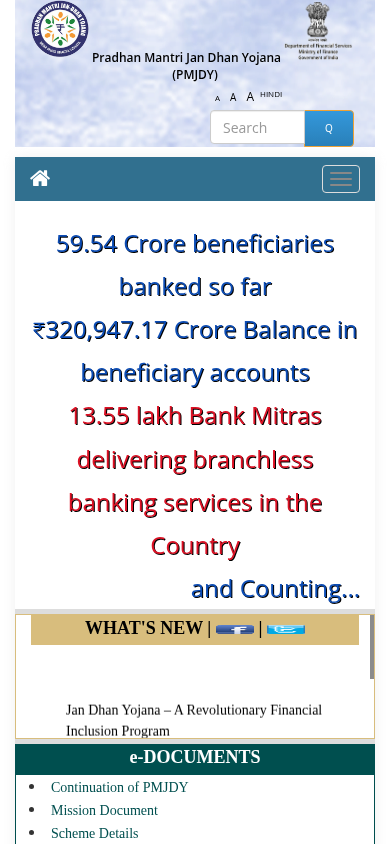

PM Jan-Dhan: zero-balance account and conditional benefits
PM Jan-Dhan Yojana helps unbanked adults access a basic bank account with no minimum-balance requirement. Its RuPay cover and overdraft have conditions. Opening an account does not automatically give you cash or an approved loan.

Official publisher logo hosted by its publisher. Official source. Independent guide, not affiliated or sponsored. Artwork and trademarks belong to their owners.
What is the account?
The Department of Financial Services describes PMJDY as access to a Basic Savings Bank Deposit account for unbanked people. The programme now focuses on every unbanked adult, rather than treating a bank account as a benefit automatically given to every household member.
A basic account can receive deposits and eligible government transfers. A zero-minimum-balance rule means you do not have to keep a set balance simply to maintain that basic account. It does not prove that every optional service or transaction is free.
Benefits and their limits
The current scheme features list a free RuPay debit card, accident insurance and access to an overdraft up to ₹10,000 subject to eligibility. An overdraft is borrowed money that must be repaid, not a government grant.
The official PMJDY page describes accident cover of ₹1 lakh, enhanced to ₹2 lakh for new accounts opened after August 28, 2018. The card's insurance has conditions. Ask the bank for the current policy, card-use requirements, covered events and claim procedure before depending on it.
This check did not verify the exact current transaction window for every RuPay policy. Old circulars are still linked on official pages, so an older 90-day rule should not be repeated as a universal current promise without checking your card's current programme.
How to apply: step by step
Checked against the official PMJDY portal on 19 October 2026.
- Read the scheme rules on the official portal pmjdy.gov.in (Department of Financial Services) - the scheme details and mission document are under e-Documents.
- Go to a bank branch or an authorised Bank Mitra outlet (the portal reports over 13 lakh Bank Mitras delivering branchless banking). Verify the outlet with the bank before sharing identity documents.
- Tell the bank whether you already have a basic savings account, so it applies the right account rules.
- Give your KYC documents as the bank's current checklist requires (Aadhaar and PAN or the officially accepted alternatives), and fill the account-opening form.
- The zero-balance Jan Dhan account is opened with a RuPay debit card; read the accident insurance and overdraft conditions that apply to it (see Benefits and their limits in this guide).
- Activate the account with a first transaction, keep the passbook/acknowledgement, and link Aadhaar and mobile so government payments reach it.

Steps 3-6 happen at the bank or Bank Mitra, so they are not shown as screenshots.
Video guides
We searched YouTube on 19 October 2026 for a step-by-step Jan Dhan account-opening video in English and in Malayalam using the current rules. We could not verify one that is current and accurate, so we are not linking any rather than risk outdated or unrelated instructions.
Government payments are separate
An account can be a route for a benefit payment, but the benefit scheme has its own eligibility and registration. Opening PMJDY alone does not establish that a pension, subsidy or cash transfer is due.
Check the particular programme through its official source. Ask the bank about account status or linking requirements without letting an unverified agent take control of your banking credentials.
Safe banking habits
Never share an OTP, PIN, password or card security details with a caller claiming to activate benefits. Do not pay someone who promises instant overdraft approval. Check unexpected credits, charges and messages through your own bank.
Keep statements and card records. If a card is lost, use the bank's official blocking route promptly. Ask how to report an account problem or a disputed charge through the institution's complaint process.
What changed since the original post?
The zero-minimum-balance benefit and conditional ₹10,000 overdraft remain supported. The accident-cover amount is tied to the account-opening boundary, and current policy conditions are left for the bank to confirm. No account was opened or personalised overdraft assessed.
Frequently asked questions
Will I receive ₹10,000 when opening?
No. It is a maximum conditional overdraft, not an automatic cash benefit.
Does zero balance mean every service is free?
No. Check the basic-account terms and any optional service charges.
Is accident cover unconditional?
No. Check your card's current insurance conditions with the bank.
Sources: Official current scheme features · Official PMJDY scheme page · Official programme portal. Checked 7 October 2026.